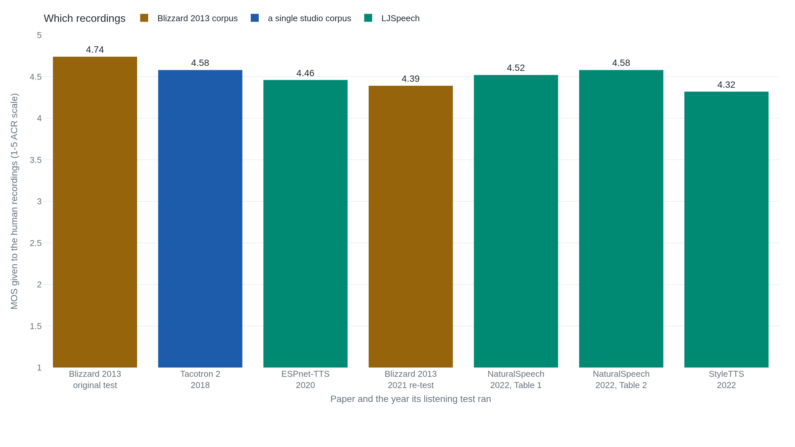

A mean opinion score doesn't travel between tests
The same three synthetic voices from a 2013 listening test scored a full point lower on a five-point scale when researchers replayed the identical recordings eight years later next to newer systems, though the ranking between them never moved.
Why this matters
Every text-to-speech and voice-cloning system that ships today reports a Mean Opinion Score, and the strong ones now claim to match or beat real human recordings. You'll meet a line like "4.5 out of 5, matching human speech" in a launch post with no way to check it against your own ears, or anyone else's. This lesson gives you the one thing that lets you read that number correctly. You'll learn what a MOS actually is and how it's built from a room of listeners. You'll also see why the exact same recording can score a full point apart, depending only on which test played it. By the end, you'll know what to ask before believing a "near-human" claim from this speech system or the next one.
- 01
- 'Human parity' in speech recognition came down to how you count the humans: the same curated-baseline problem, one step removed, in speech recognition's own accuracy score.
Five words, averaged
A synthesized voice ships with a claim like "MOS 4.53," and the number reads like a fixed measurement, the same wherever you see it. It isn't. The Mean Opinion Score comes from a 1996 telecommunications standard, ITU-T Recommendation P.800, which lays out a five-point scale for judging a sample of speech: Excellent, Good, Fair, Poor, and Bad, worth 5 down to 1. A MOS is the arithmetic mean of whatever scores a group of listeners hands out, nothing more.1
Take five listeners rating one synthesized sentence. Score it 5, 4, 4, 3, and 5, and the mean is 4.2. A published test looks the same, just with more listeners and a spread reported alongside the mean. When Google's Tacotron 2 team rated their system on 100 sentences held out of training, each judged by at least eight raters, they reported a MOS of 4.526, with a 95% confidence interval of ±0.066.2 That interval says how much the mean would likely shift with a fresh set of listeners from the same pool, rating the same audio the same way again. It says nothing about a different pool, different audio, or different instructions.
For a synthesized voice, listeners are usually asked to judge naturalness: how much a clip sounds like an unscripted human voice rather than a machine reading text aloud. That single word carries the whole judgment the five labels above were built to grade. Every listener applies it slightly differently, which is exactly why the standard specifies a mean of many opinions rather than trusting any one of them.
Eight listeners, screened and tested
Most MOS figures published today don't come from a soundproofed lab. They come from a crowdsourcing pipeline ITU-T standardized in 2021, as Recommendation P.808, once recruiting strangers online became how most of this work actually got done.3
-
Recruiting and screening listeners
A listener needs hearing loss no worse than 25 decibels up to 8 kHz, and needs to be a native or native-level speaker of the test language. They also can't have taken another subjective listening test in the past week, or the same kind of test in the past two weeks.3
-
Checking whether they're actually listening
The test mixes in "gold standard" clips with a known right answer, plus "trapping" questions that only an attentive listener passes.3
-
Setting how many ratings are enough
Each individual clip needs at least eight ratings, and each condition, meaning each system under test, needs at least 96 votes total, spread across its clips.3
-
Averaging, with the spread attached
The MOS is the mean of every vote that survives screening. A companion standard, P.800.2, requires that number to travel with the vote count behind it, the standard deviation, and the exact test conditions, because a mean by itself says nothing about how many listeners agreed on it.4
What eight years changed, and what it didn't
Inside one test, a MOS supports a real comparison: the same listeners, hearing the same samples, under the same instructions, in the same sitting. Rank two systems tested that way and the ranking is earned. Even inside one test, though, individual raters don't agree with each other by much. Across 46 real text-to-speech listening tests run on Amazon Mechanical Turk between 2015 and 2017, the average gap between a test's most lenient rater and its harshest was 2.31 points on the five-point scale. That's more than the distance from Fair to Excellent. Two in-person tests run by IBM staff instead of crowdworkers showed a similarly wide spread, so the disagreement isn't specific to crowdsourcing.5 A gap that wide is exactly what an honestly reported confidence interval is supposed to flag.
Cross a test's boundary, though, and even a ranking stops being a safe bet, because the number was never just about the audio. P.800.2, the standard's own guide to interpreting a MOS, says as much directly: it is "not meaningful to directly compare MOS values produced from separate experiments, unless those experiments were explicitly designed to be compared, and even then the data should be statistically analysed to ensure that such a comparison is valid."4 Researchers at the University of Edinburgh gave that warning a controlled test in 2022. They took the exact audio that three systems, built on three different synthesis methods, had submitted to the 2013 Blizzard Challenge, a long-running text-to-speech contest. Then they replayed those identical recordings in a new listening test on the platform Prolific in 2021, this time alongside four newer neural systems.6 Nothing about the audio changed. The scores did.
| System | 2013 test | 2021 re-test | Change |
|---|---|---|---|
| K | 3.81 | 2.62 | down 1.19 |
| N | 3.22 | 2.00 | down 1.22 |
| C | 2.88 | 1.96 | down 0.92 |
Every system dropped by roughly a full point on the five-point scale, for audio that hadn't changed at all. What survived was the order: system K still rated significantly more natural than N and C in both years. The only real difference in 2021 was that the data could no longer tell N and C apart from each other.6 The scores compressed. The ranking held. That's the honest version of what a MOS can promise: inside its own test, who beat whom. Not the number by itself, and not that number set next to a different test's number.
The same instability shows up in the one score that's supposed to be the anchor of every MOS test: the rating given to actual human recordings, played alongside the synthetic ones as a reference. Seven listening tests across five research groups put a number on how natural real human speech sounds, and none of them agree.

The footnote that decided "human-level quality"
One of those seven papers made an even sharper version of the same point, without needing a second paper at all. NaturalSpeech, a 2022 text-to-speech system from Microsoft, set out to show it reached "human-level quality." The paper defines that term precisely: no statistically significant difference between the system's quality scores and the human recordings' quality scores on the same test set.9 It tested for that difference with a direct comparison score rather than two separate absolute MOS numbers, checked with a Wilcoxon signed-rank test. On 50 LJSpeech sentences judged by 20 native English speakers, NaturalSpeech scored -0.01 on that comparison against human recordings, with p = 0.69, well short of significance. The paper reports that as human-level quality.9
You can already see one seam in the chart above: NaturalSpeech's own paper reports two different scores for its own reference recordings, 4.52 in one table judged alongside four older systems and 4.58 in another judged alongside only NaturalSpeech itself.9 A footnote attached to the paper's own sentence announcing that result explains a second and larger seam: how the human side of that comparison test was built.
"Note that some human recordings in LJSpeech dataset may contain strange rhythm ups and downs that affect the rating score. To ensure the human recordings used for evaluation are of good quality, we let judges to exclude the recordings with strange rhythms from evaluation. Otherwise, our NaturalSpeech will achieve better CMOS than human recordings."9 Tan et al., "NaturalSpeech," footnote 4
Judges were told, before they rated anything, to drop any LJSpeech recording with rough rhythm from the human side of the comparison. The same footnote states what the score would have been without that exclusion: NaturalSpeech would have beaten the unfiltered human recordings by 0.09 on the comparison scale.9 The arithmetic wasn't wrong. It measured exactly what it set out to measure: NaturalSpeech against a reference set already cleaned of its worst human takes. "Human-level quality" suggests a comparison against human speech in general, and that's the comparison the paper never ran.
Comparing scores without pooling them
A system called "Tacotron 2" carries three different published MOS figures under its name. Its own 2018 paper reported 4.526.2 A 2020 retraining by a different team reported 4.20.7 A 2022 test by a third team, using a harsher, anchored comparison design, reported 3.01.8 Read in sequence, that looks like a decline. Cooper and Yamagishi reviewed this pattern from outside all three papers. What moved wasn't the system, they found: the listeners, the sentences, the training data, the vocoder, and even the size of the scale's own step size differed in every test.10
Two things travel better than a bare MOS. One is a comparison test run in a single sitting, such as the CMOS that NaturalSpeech used for its own parity claim. Defined in the same original standard as MOS, it asks listeners to rate one clip directly against another rather than each in isolation.1 The other is the checklist P.800.2 requires alongside any reported MOS: the vote count, the standard deviation, the number of subjects, and the exact test conditions.4 Neither fixes the deeper problem alone. A comparison test still needs an honest reference, which is what NaturalSpeech's footnote shows going wrong even inside a same-sitting test. A checklist only lets a reader check whether two tests are comparable; it doesn't make them so.
The same instability follows a MOS into the automatic predictors now trained to guess one from audio alone, without any listeners at all. Those models learn from pooled human ratings collected across many separate tests. That's exactly the move the Edinburgh replication study warns against: "it is certainly not valid to simply pool MOS obtained from multiple listening tests, to form a training set for a MOS prediction model."6 A predictor trained that way inherits the same seam it was built to paper over.
The takeaway
A Mean Opinion Score is a mean of votes on a five-point scale, nothing more exotic than that. It only means what it says inside the test that produced it: the same listeners, the same samples, the same instructions, the same batch of systems. Move it outside that box, or let a paper choose which human recordings get to stand for "human," and the number stops doing the job its decimal point implies. The next time you meet a "near-human" MOS claim, the question isn't whether 4.5 is a good score. It's whether the human recordings it's being measured against sat in the same test, rated by the same listeners, under the same rules as the system claiming to match them.
- 01
- ITU-T P.808: the full 2021 crowdsourcing standard behind this lesson's rating pipeline.
- 02
- Le Maguer, King & Harte, "Back to the Future": the full paper behind the same-recordings, eight-years-apart replay.
Sources
- ITU-T · P.800: Methods for Subjective Determination of Transmission Quality
- Google (Shen et al.) · Natural TTS Synthesis by Conditioning WaveNet on Mel Spectrogram Predictions
- ITU-T · P.808: Subjective Evaluation of Speech Quality with a Crowdsourcing Approach
- ITU-T · P.800.2: Mean Opinion Score Interpretation and Reporting
- Rosenberg & Ramabhadran · Bias and Statistical Significance in Evaluating Speech Synthesis with Mean Opinion Scores
- Le Maguer, King & Harte · Back to the Future: Extending the Blizzard Challenge 2013
- Hayashi et al. · ESPnet-TTS: Unified, Reproducible, and Integratable Open Source End-to-End Text-to-Speech Toolkit
- Li, Han & Mesgarani · StyleTTS: A Style-Based Generative Model for Natural and Diverse Text-to-Speech Synthesis
- Tan et al. · NaturalSpeech: End-to-End Text to Speech Synthesis with Human-Level Quality
- Cooper & Yamagishi · Investigating Range-Equalizing Bias in Mean Opinion Score Ratings of Synthesized Speech